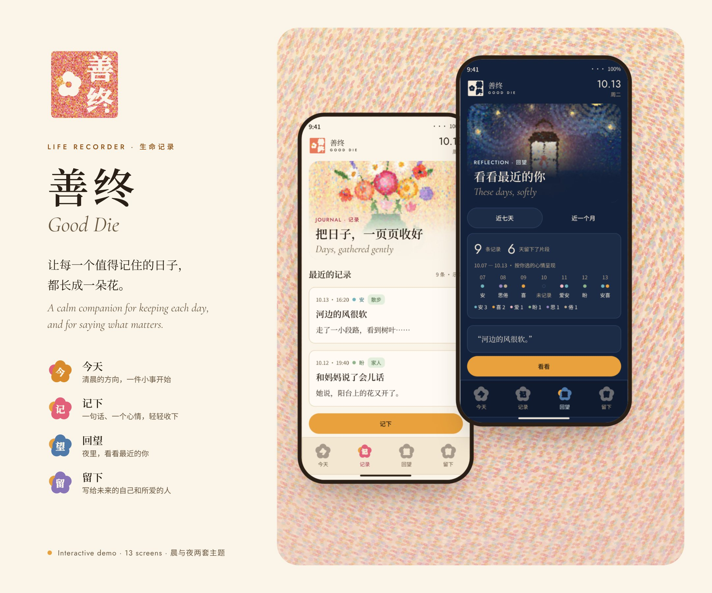
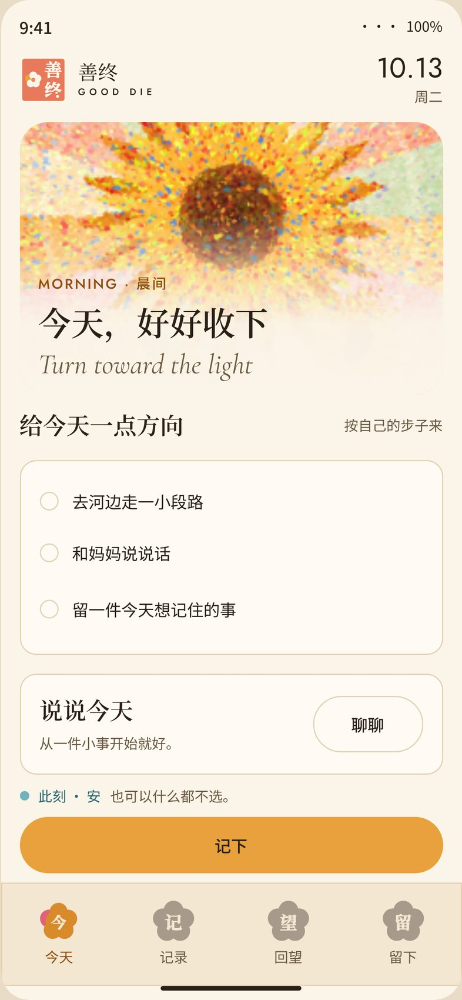

个人产品 · 2026
善终Good Die
一个平静的空间，让你在为时已晚之前说出最重要的话：心愿、写给挚爱之人的信，以及你所信任的人——一步一个小小的脚印。
打开交互演示

我把医学研究转化为人们能用的东西——从光纤针尖追踪，到可信赖的牙科 AI。

我是梁维栋（James），一名生物医学工程师，现为伦敦国王学院 Translational AI Research (TAIR) Lab 的博士后研究员。
我目前的工作聚焦于开发可信赖的 AI 工具，帮助牙医审阅临床记录、发现记录中的缺漏并提升记录质量。我与临床医生和 AI 研究者密切合作，把临床指南、专家反馈和以用户为中心的设计结合起来，打造契合日常牙科诊疗的工具。
我的研究兴趣涵盖医疗 AI、生物医学影像、影像引导介入以及医疗器械研发。我尤其关注如何把工程研究转化为解决临床问题的实用方案，将技术开发与临床评估、创业连接起来。
我在伦敦国王学院的生物医学工程博士研究，聚焦于用于影像引导手术的三维容积超声成像与光纤针尖追踪，导师为 Dr Wenfeng Xia 与 Professor Sebastien Ourselin FREng。
我拥有帝国理工学院的医疗器械设计与创业研究型硕士（MRes）学位，导师为 Professor Dario Farina 与 Professor James Moore Jr；并以一等荣誉获得伯明翰大学机械工程工学学士学位，导师为 Professor Duc Truong Pham OBE, FREng。
在伦敦国王学院的 Centre for Oral, Clinical & Translational Sciences（COCTS），我开发可信赖的 AI，帮助牙医审阅临床记录、发现记录缺漏并提升记录质量——以“软件即医疗器械”（SaMD）的形式交付，并与临床医生和 AI 研究者协作。
一家医疗器械公司，是伦敦国王学院的准衍生企业，基于我的博士研究开发超声引导的光纤针尖追踪技术。我负责战略、融资、产品开发与临床转化。
我在 Outstanding Young Scholars Society (OYSS) UK 下创办了 DeepTech Founders’ Club。OYSS 是一个由在英华人学者与创业者组成的社团，由 University of Warwick 负责东亚及东南亚事务的副常务副校长 Prof Sai Gu FREng 领导。该俱乐部汇聚了 3,000+ 名研究者、创始人、投资人与产业伙伴，助力让更多深科技走出高校。
帝国理工学院的一家衍生公司，开发可穿戴机器人手，如今名为 Neubond。它打造可负担、易获取的神经康复技术，把康复训练带入中风康复者的日常生活。它源自我的 MRes，也是我的第一个创业项目：我做了市场调研与商业计划，并进行了路演。
一个平静的空间，让你在为时已晚之前说出最重要的话：心愿、写给挚爱之人的信，以及你所信任的人——一步一个小小的脚印。
打开交互演示

帮助牙科临床医生自查记录中缺漏与风险的 AI，与临床医生及产业伙伴共同开发，以“软件即医疗器械”（SaMD）形式交付。更多内容即将分享。
AI + AR，为出院后的中风患者提供支持。
Cambridge RealityX · 赛道冠军一个 AI 生成音乐平台。
一个为早起者打造的互助社群。
一枚能告诉扫描仪自己位置的针。
我在 School of Biomedical Engineering & Imaging Sciences 的博士研究解决了一个简单的问题：在超声下，针尖很容易“看丢”。我制作了置于针内、与探头通信的光纤换能器，从而能在容积图像上实时、三维地定位针尖。
我在股神经阻滩模拟器上验证了该系统——这是迈向更安全区域麻醉的一步——随后联合创办 Beacon Surgical，推动它走向临床。
二维矩阵探头有成千上万个阵元。要以少得多的通道实现三维成像与追踪，可将有效阵元布置在费马螺线上，每个相对上一个旋转一个黄金角。
这种布局均匀覆盖孔径却从不重复，从而抑制栅瓣。当针尖发出脉冲时，每个阵元接收到它的时间略有不同，这些时延便可在三维中精确定位针尖。
共 6 篇第一作者、7 篇合作论文。完整列表见我的简历。
很少有人同时站在高校实验室、医院、监管机构与市场的交汇处。我正工作在这片重叠地带。
我是一名转化研究者：我的工作，是把一个想法安全地送过从高校实验台到医院病床之间的鸿沟——这段路常被称作“死亡之谷”。它需要技术深度、临床验证、合规质量，以及一位创始人对“真正抵达患者需要什么”的直觉。